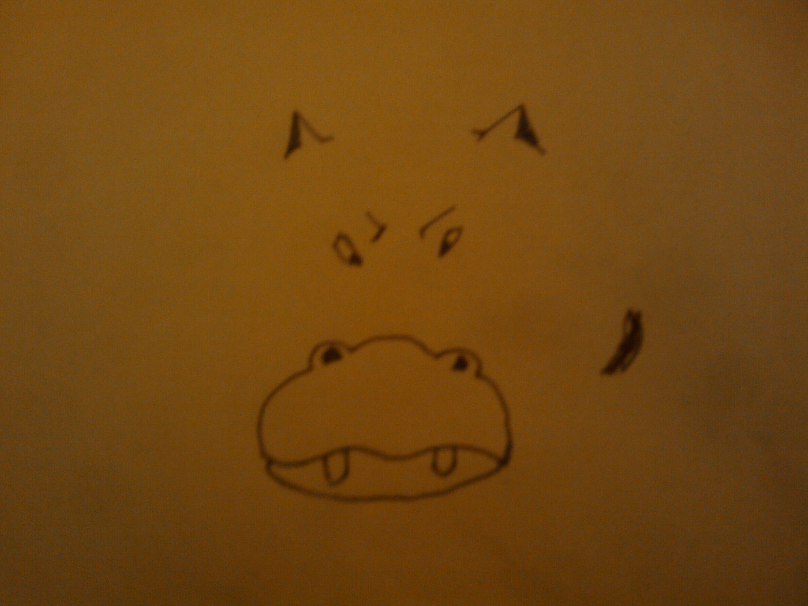
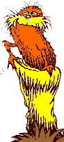
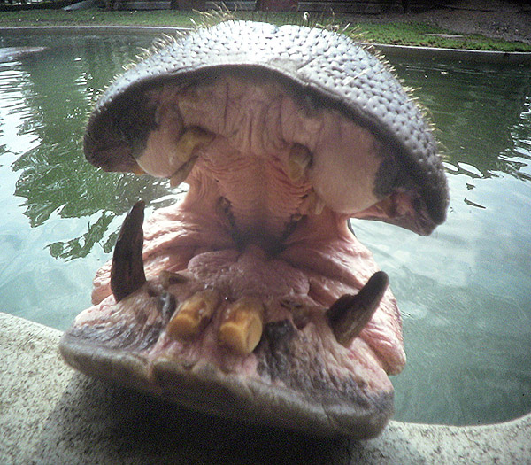

| Have You Herd? | |
| Philosophy | |
| Biographies | |
| Video | |
| Photography | |
| History | |


The Hip-Huck-Apotomous story is a long and varied tale. This dinosaur was one of the first to become extinct, which has had scholars perplexed for ages. We are here to pass along the lost knowledge.
The blood line draw from the early Paleolithic era with our most active of ancestors, the Hipposaourus. His Latin name Hippolayoutamushorizosmaximus. This creature could be found in four glorious colors: green, yellow, purple and blue. All the other creatures were jealous of the beautiful colors and how easily the hippos could form ultimate teams. These original hippos where in really great shape since all they did was play ulti all day long. A far cry from the libelous image put forth by our nemesis Milton and his buddy Bradley.
It was no meteor or ice age that did them in. It was their love of the layout that got them. It just wouldn't matter how close to a precipice or dangling participle these hippos would bid on a perfect horizontal.
One by one the entire species flung themselves off a cliff! As Pangaea broke apart our distant cousins where growing closer to extinction.
Alas, there were only four that survived. They happened to be a little more rotund. One of each color, by a strange happenstance. Since they could not move as fast as the others, they were stuck tossing it deep for the other hipposauruses. Over the years they developed their hucking skills and become an elite force organizing the original ultimate body -- the Ultimate Hippos Association.
This species resembles what we now know as Hippopotamus. They were the Hip-Huck-Apotomous!
We have rounded up the whole heard and brought them back again to take the field against the best that you can throw at us and to tell our story. The story that Milton & Bradley left out. Yes these hippos are hungry hungry! But the didn't warn you that the the hungry, hungry hippos are hungry for the HUCK!
Like a dream or a voice on the wind, it calls to us.
Return to your island home to bring forth the spirt.
 I didn't know if I'd ever get back having moved to NYC. Then I got to talking to Scottie, and he said "oh yeah we're going back. Let's get a bid together RIGHT NOW." And thus the infamous lorax was born and took our licks at KK17. I was overjoyed to see the Fringeheads win the spirit award. I felt doubly blessed when they invited me to join in the celebratory beverage -- my kaimana spirit shot glass has a spot of honor on the hearth.
KK18 was a sad time. We secured a bid but couldn't get momentum to get over the hump of 14 hour travel times from NY.
KK20 brought forth a new plan: Scott just went to watch. Is that retirement I hear creeping up? A decade between Kaimana visits is just too long!
 The call of the West is strong. The sirens of youth call forth. The mighty Pacific weaves a beautiful charm. And so we have moved back to the shores of the pacific, here in Calironia. Scott and I find ourselves back, and available, and with new frisbee friends to draw from. Foca with his organizational and mingling skills have put us together a rockstar line ready to represent. From the ashes of the lorax, we arise phoenix like, the hip-huck-apotomous. Our spirit is still strong and our love runs deep. I can't wait to party with you all again.
Aloha and Mahalo,
--spaz